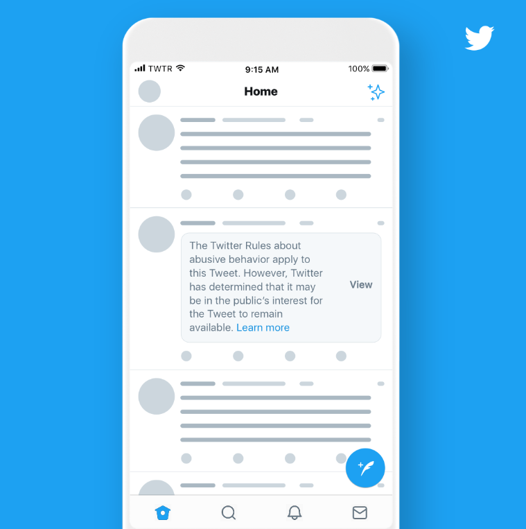

Facebook
Youtube
Instagram
Twitter
트위터(Twitter)란?

2006년 미국의 잭 도시(Jack Dorsey)·에번 윌리엄스(Evan Williams)·비즈 스톤(Biz Stone) 등이 공동으로 개발한 '마이크로 블로그' 또는 '미니 블로그'로서 샌프란시스코의 벤처기업 오비어스(Obvious Corp.)가 처음 개설하였다. 트위터란 '지저귀다'라는 뜻으로, 재잘거리 듯이 하고 싶은 말을 그때그때 짧게 올릴 수 있는 공간이다. 한 번에 쓸 수 있는 글자수도 최대 140자로 제한되어 있다.
블로그의 인터페이스에 미니홈페이지의 '친구맺기' 기능, 메신저의 신속성을 갖춘 소셜 네트워크 서비스(SNS)로서, 관심 있는 상대방을 뒤따르는 '팔로(follow)'라는 독특한 기능을 중심으로 소통한다. 이는 다른 SNS의 '친구맺기'와 비슷한 개념이지만 상대방이 허락하지 않아도 일방적으로 '뒤따르는 사람' 곧 '팔로어(follower)'로 등록할 수 있는 점이 가장 큰 차이점이다. 웹에 직접 접속하지 않더라도 휴대전화의 문자메시지(SMS)나 스마트폰 같은 휴대기기 등 다양한 방법을 통하여 글을 올리거나 받아볼 수 있으며, 댓글을 달거나 특정 글을 다른 사용자들에게 퍼트릴 수도 있다. 언제 어디서나 정보를 실시간으로 교류하는 '빠른 소통'이 가장 큰 특징으로서 세계적 뉴스채널로 속보를 장점으로 하는 CNN을 앞지를 정도로 신속한 '정보 유통망'으로 주목받고 있다.